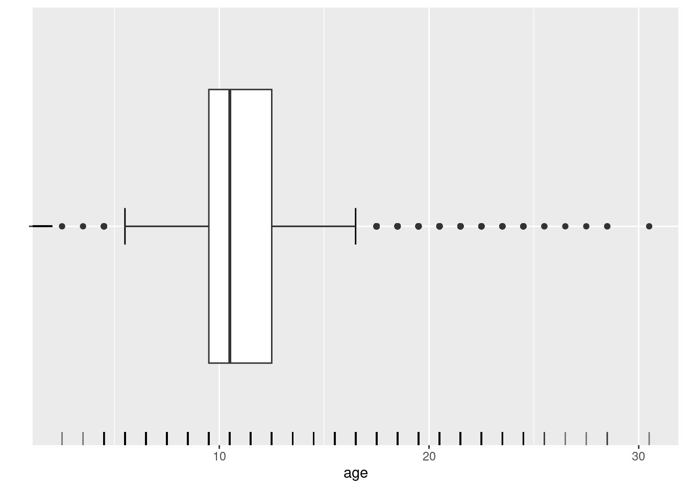
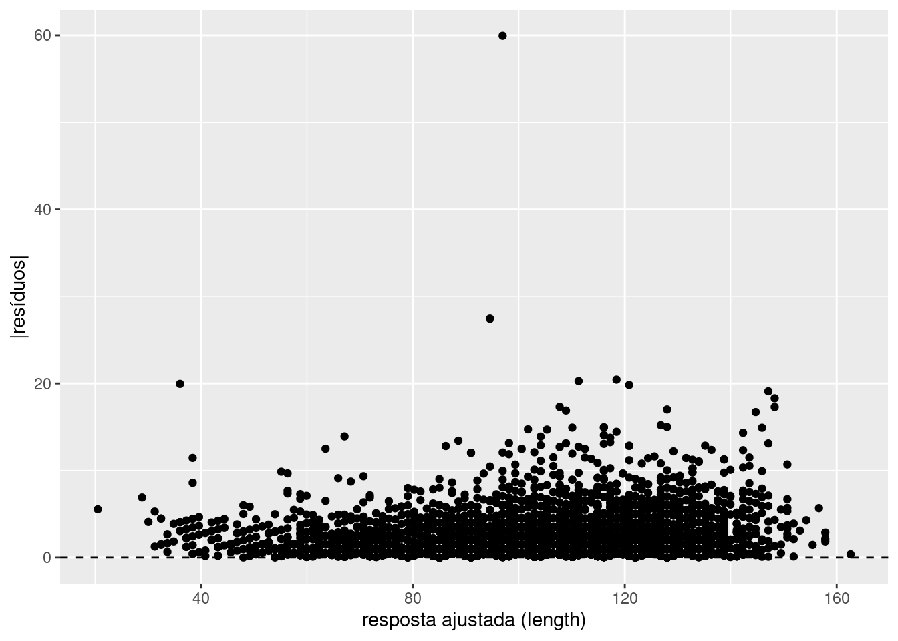
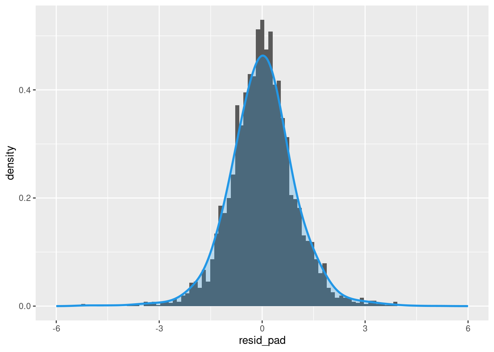
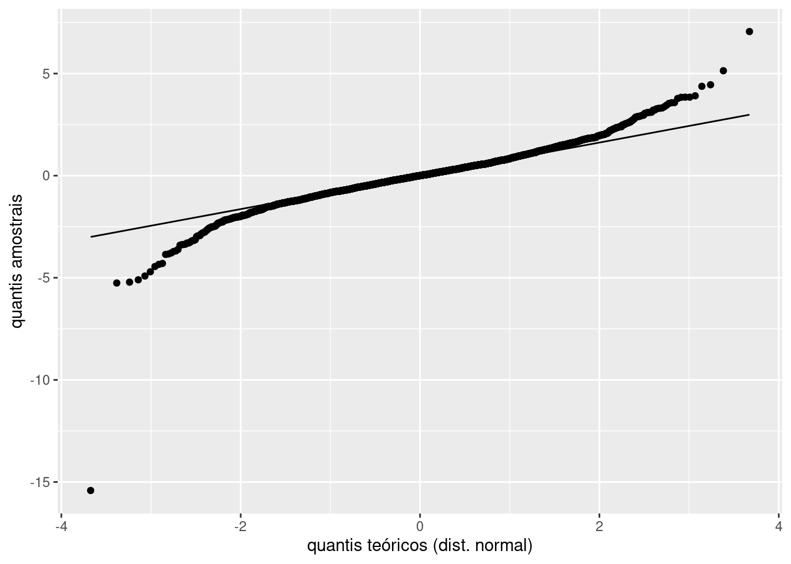
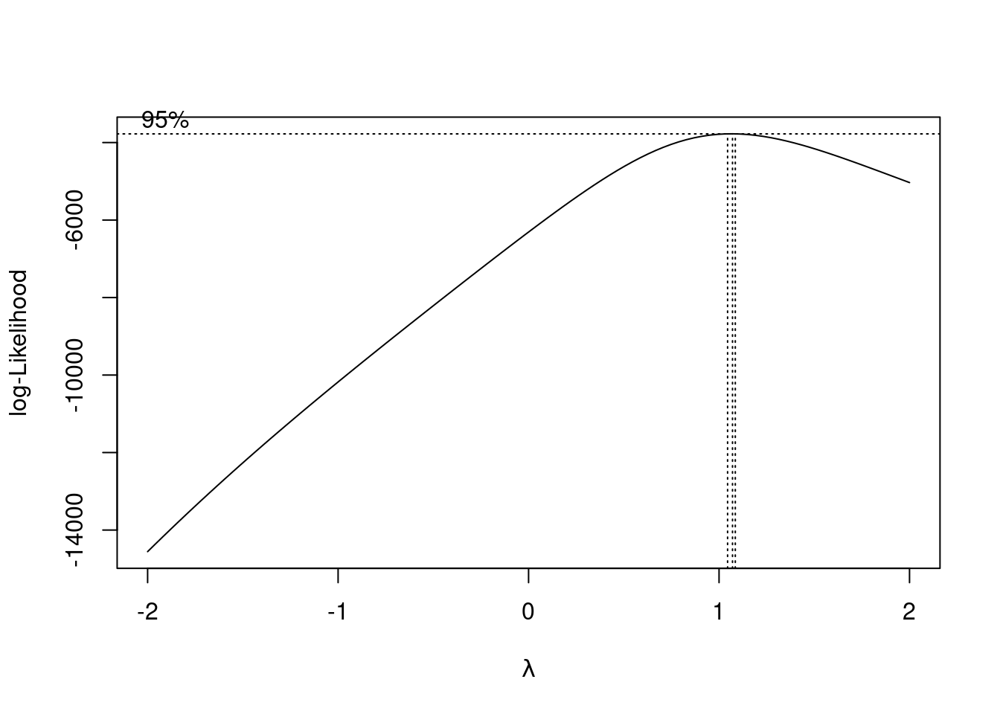
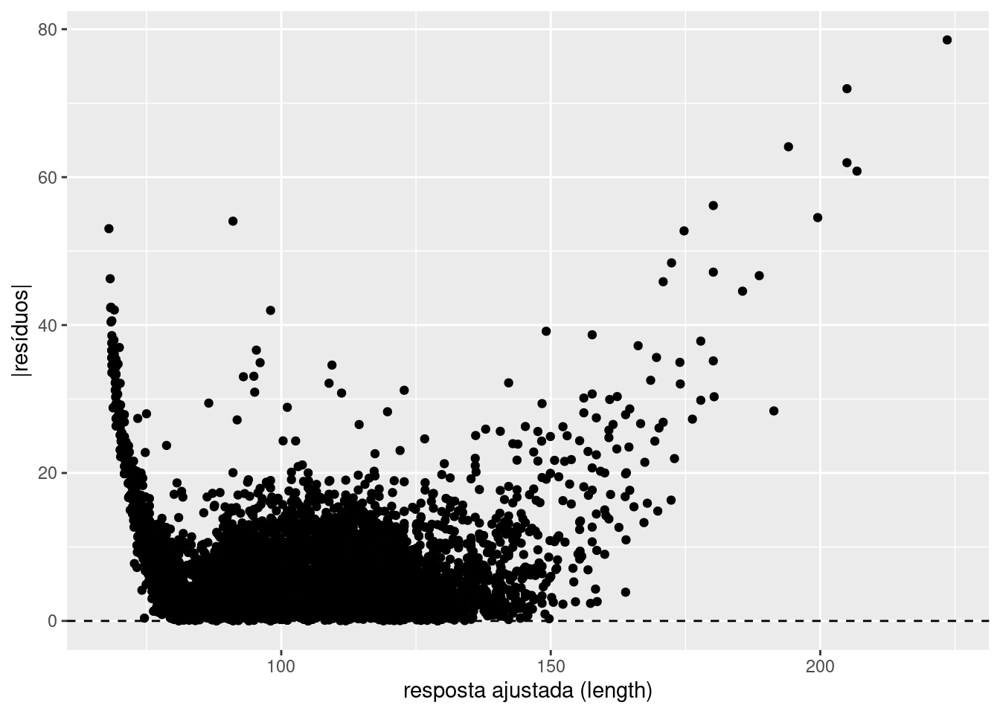

rm(list=ls())
abalone <- read_csv("data/abalone/abalone.data", col_names = FALSE)
names(abalone) <- c("sex", "length", "diameter", "height", "whole_w", "shucked_w", "viscera_w", "shell_w", "rings")GED-16: Análise de Regressão
AULA03: Prática (1o. semestre/2023)
Abalone é um tipo de molusco que vive em águas marinhas costeiras em diversas regiões do globo. A concha do abalone apresenta tamanho que varia entre 10 a 25cm e sua coloração interior iridescente nacarada é muito valorizada na confecção de jóias e ornamentos; além disso, a carne do animal é considerada uma iguaria em muitos países. Devido ao seu alto valor comercial e consequente pesca excessiva, além da degradação de seu habitat pela ação humana, diversas espécies de abalone atualmente correm risco de extinção. Existem mais de 100 espécies de abalone ao redor do mundo, das quais cerca de 15 são produzidas por meio de aquicultura. Determinar a idade do abalone de maneira acurada é importante tanto em termos comerciais (o valor comercial do abalone está associado à sua idade) bem como em termos ambientais (condições ambientais podem afetar a saúde do animal). A idade do animal pode ser determinada a partir da contagem do número de anéis na concha, utilizando um microscópio, a partir de um procedimento delicado e trabalhoso.

Os dados disponíveis no arquivo data/abalone/abalone.data foram obtidos no UCI Machine Learning Repository e são bastante utilizados na investigação de métodos de Machine Learning. Tais dados foram coletados a partir do estudo original:
Warwick J Nash, Tracy L Sellers, Simon R Talbot, Andrew J Cawthorn and Wes B Ford (1994) “The Population Biology of Abalone (Haliotis species) in Tasmania. I. Blacklip Abalone (H. rubra) from the North Coast and Islands of Bass Strait”, Sea Fisheries Division, Technical Report No. 48 (ISSN 1034-3288).
O principal objetivo do projeto era determinar a idade do molusco a partir de medidas físicas do animal mais fáceis de serem obtidas. Os dados originais foram pré-processados no sentido de remover observações faltantes e os valores das variáveis contínuas foram dividos por 200. Há um total de 4177 observações coletadas para 9 variáveis:
sex: sexo do animal (M, F, I)length: maior comprimento da concha (mm)diameter: comprimento perpendicular àlength(mm)height: comprimento da carne da concha (mm)whole_w: peso do animal (g)shucked_w: peso da carne (g)viscera_w: peso das vísceras (g)shell_w: peso da concha (g)rings: número de anéis (a idade é obtida somando 1.5)
Mais informações a respeito dos dados podem ser obtidas no arquivo data/abalone/abalone.names.
Análise Exploratória de Dados
Conduza a análise exploratória da massa de dados abalone, a fim de compreender suas características principais.
Voltaremos a utilizar essa massa de dados em atividades futuras.
Começamos identificando a estrutura dos dados:
str(abalone)spc_tbl_ [4,177 × 9] (S3: spec_tbl_df/tbl_df/tbl/data.frame)
$ sex : chr [1:4177] "M" "M" "F" "M" ...
$ length : num [1:4177] 0.455 0.35 0.53 0.44 0.33 0.425 0.53 0.545 0.475 0.55 ...
$ diameter : num [1:4177] 0.365 0.265 0.42 0.365 0.255 0.3 0.415 0.425 0.37 0.44 ...
$ height : num [1:4177] 0.095 0.09 0.135 0.125 0.08 0.095 0.15 0.125 0.125 0.15 ...
$ whole_w : num [1:4177] 0.514 0.226 0.677 0.516 0.205 ...
$ shucked_w: num [1:4177] 0.2245 0.0995 0.2565 0.2155 0.0895 ...
$ viscera_w: num [1:4177] 0.101 0.0485 0.1415 0.114 0.0395 ...
$ shell_w : num [1:4177] 0.15 0.07 0.21 0.155 0.055 0.12 0.33 0.26 0.165 0.32 ...
$ rings : num [1:4177] 15 7 9 10 7 8 20 16 9 19 ...
- attr(*, "spec")=
.. cols(
.. X1 = col_character(),
.. X2 = col_double(),
.. X3 = col_double(),
.. X4 = col_double(),
.. X5 = col_double(),
.. X6 = col_double(),
.. X7 = col_double(),
.. X8 = col_double(),
.. X9 = col_double()
.. )
- attr(*, "problems")=<externalptr> Percebemos que as variáveis já possuem nomes explicativos. Porém, percebe-se que sex está com tipo char quando deveria ser Factor. Vamos também obter a idade, a partir do número de anéis do Abalone, e retornar os valores contínuos para suas escalas originais (multiplicar por 200).
abalone <- abalone %>% mutate_at("sex", as.factor)
abalone$age <- abalone$rings + 1.5
abalone$length <- abalone$length * 200
abalone$diameter <- abalone$diameter * 200
abalone$height <- abalone$height * 200
abalone$whole_w <- abalone$whole_w * 200
abalone$shucked_w <- abalone$shucked_w * 200
abalone$viscera_w <- abalone$viscera_w * 200
abalone$shell_w <- abalone$shell_w * 200Dessa forma, temos o sumário do conjunto de dados:
summary(abalone) sex length diameter height whole_w
F:1307 Min. : 15.0 Min. : 11.00 Min. : 0.0 Min. : 0.4
I:1342 1st Qu.: 90.0 1st Qu.: 70.00 1st Qu.: 23.0 1st Qu.: 88.3
M:1528 Median :109.0 Median : 85.00 Median : 28.0 Median :159.9
Mean :104.8 Mean : 81.58 Mean : 27.9 Mean :165.7
3rd Qu.:123.0 3rd Qu.: 96.00 3rd Qu.: 33.0 3rd Qu.:230.6
Max. :163.0 Max. :130.00 Max. :226.0 Max. :565.1
shucked_w viscera_w shell_w rings
Min. : 0.20 Min. : 0.10 Min. : 0.30 Min. : 1.000
1st Qu.: 37.20 1st Qu.: 18.70 1st Qu.: 26.00 1st Qu.: 8.000
Median : 67.20 Median : 34.20 Median : 46.80 Median : 9.000
Mean : 71.87 Mean : 36.12 Mean : 47.77 Mean : 9.934
3rd Qu.:100.40 3rd Qu.: 50.60 3rd Qu.: 65.80 3rd Qu.:11.000
Max. :297.60 Max. :152.00 Max. :201.00 Max. :29.000
age
Min. : 2.50
1st Qu.: 9.50
Median :10.50
Mean :11.43
3rd Qu.:12.50
Max. :30.50 Percebe-se que algumas observações possuem altura zero. Avaliando essas observações:
abalone[abalone$height==0,]# A tibble: 2 × 10
sex length diameter height whole_w shucked_w viscera_w shell_w rings age
<fct> <dbl> <dbl> <dbl> <dbl> <dbl> <dbl> <dbl> <dbl> <dbl>
1 I 86 68 0 85.6 41.3 17.2 23 8 9.5
2 I 63 46 0 26.8 11.5 5.7 70.1 6 7.5Obtemos duas observações que não fazem sentido (altura zero e pesos diferentes de zero). Podemos retirá-las do conjunto de dados.
abalone <- abalone[abalone$height!=0,]Assim, temos um sumário dos dados atualizados.
summary(abalone) sex length diameter height whole_w
F:1307 Min. : 15.0 Min. : 11.00 Min. : 2.00 Min. : 0.40
I:1340 1st Qu.: 90.0 1st Qu.: 70.00 1st Qu.: 23.00 1st Qu.: 88.45
M:1528 Median :109.0 Median : 85.00 Median : 28.00 Median :160.00
Mean :104.8 Mean : 81.59 Mean : 27.92 Mean :165.80
3rd Qu.:123.0 3rd Qu.: 96.00 3rd Qu.: 33.00 3rd Qu.:230.70
Max. :163.0 Max. :130.00 Max. :226.00 Max. :565.10
shucked_w viscera_w shell_w rings
Min. : 0.20 Min. : 0.10 Min. : 0.30 Min. : 1.000
1st Qu.: 37.25 1st Qu.: 18.70 1st Qu.: 26.00 1st Qu.: 8.000
Median : 67.20 Median : 34.20 Median : 46.80 Median : 9.000
Mean : 71.90 Mean : 36.13 Mean : 47.77 Mean : 9.935
3rd Qu.:100.40 3rd Qu.: 50.60 3rd Qu.: 65.75 3rd Qu.:11.000
Max. :297.60 Max. :152.00 Max. :201.00 Max. :29.000
age
Min. : 2.50
1st Qu.: 9.50
Median :10.50
Mean :11.44
3rd Qu.:12.50
Max. :30.50 Dado o sumário, analisaremos agora a distribuição de algumas das grandezas de interesse no conjunto de dados. Começaremos pela idade dos Abalones, a partir da qual pode ser construído o histograma abaixo, juntamente com a sua curva de densidade estimada. Pela análise destes, nota-se que há um grande número de Abalones com uma idade próxima a 10 anos, com os mais velhos podendo ter até próximo de 30 anos.
# Histograma de `age`
ggplot(abalone, aes(x = age)) +
geom_histogram(aes(y = after_stat(density))) +
# adiciona linha de densidade estimada (suavização)
geom_density(lwd = 1, colour = 4,
fill = 4, alpha = 0.25, bw = 0.6) +
# adiciona dispersão unidimensional de `age`
geom_rug(alpha = 0.5)Pode-se, também, construir um conjunto de gráficos para analisar a relação entre cada uma das características do conjunto de dados. Nota-se, entretanto, que esse conjunto não conta com os valores de correlação das variáveis.
plot(abalone[,-c(9,9)])Dessa maneira, pode-se, com base na figura anterior, construir a próxima, que conta com os valores de correlação entre as diferentes variáveis, bem como gráficos mais informativos relacionando o sexo dos Abalones com as suas outras características.
library(GGally)
ggpairs(abalone[,-c(9,9)])Com base nesse apanhado geral de gráficos, pode-se realizar uma análise focada nas relações mais interessantes. Um desses casos consiste em comparar o valor do peso total do Abalone com os diferentes valores de pesos registrados posteriormente (whole, shucked, viscera e shell). Como pode-se constatar no conjunto de observações abaixo, a soma dos diferentes valores de peso nem sempre resulta no peso total registrado.
abalone[c(1,2,3),]# A tibble: 3 × 10
sex length diameter height whole_w shucked_w viscera_w shell_w rings age
<fct> <dbl> <dbl> <dbl> <dbl> <dbl> <dbl> <dbl> <dbl> <dbl>
1 M 91 73 19 103. 44.9 20.2 30 15 16.5
2 M 70 53 18 45.1 19.9 9.7 14 7 8.5
3 F 106 84 27 135. 51.3 28.3 42 9 10.5Assim, pode-se gerar o gráfico da variável whole_w versus a soma das variáveis shucked_w, viscera_w e shell_w. Bem como o valor de correlação das duas grandezas obtidas. Por fim, nota-se que este último é de aproximadamente 99.51%, um valor bastante alto.
abalone$sum_w <- abalone$shucked_w + abalone$viscera_w + abalone$shell_w
plot(abalone$whole_w, abalone$sum_w) cor(abalone$whole_w, abalone$sum_w)Podemos também analisar a distribuição da idade dos Abalones, o que é feito abaixo, através da geração de um boxplot. Nota-se, através deste, que 50% dos Abalones encontram-se na faixa entre 9 e 13 anos de idade. Além disso, existem vários outliers com idades superiores a 18 anos de idade.
# Boxplot de `age`
ggplot(abalone, aes(x = age, y = "")) +
# adiciona barras de erros
geom_errorbar(stat = "boxplot", width = 0.1) +
# adiciona boxplot
geom_boxplot () +
# adiciona dispersão unidimensional de `age`
geom_rug(alpha = 0.5) +
# adiciona rótulo aos eixos
labs(y = "", x = "age")
Pode-se também realizar a análise da distribuição de idades conforme o sexo do Abalone, para determinar se há uma tendência dos machos ou fêmeas terem uma expectativa de vida maior. Para tal, geram-se, novamente, boxplots da idade para cada um dos sexos. Não há grandes diferenças na distribuição de idades de machos e fêmeas. Nota-se, porém, que a grande maioria dos indivíduos de sexo não identificado são mais jovens do que os demais. Isso pode ser uma evidência de se existir uma dificuldade na identificação do sexo do Abalone quando este é mais jovem, sendo esta tarefa possivelmente mais fácil conforme estes envelhecem.
# Boxplots
ggplot(abalone, aes(x = age, y = sex)) +
geom_boxplot()Ainda com base nos gráficos de relação entre as características, podemos analisar mais a fundo a relação entre o tamanho e o peso dos abalones. Tomando as variáveis whole_w e diameter, podemos percaber uma grande correlação entre essas variáveis.
ggplot(abalone)+
geom_point(aes(x=whole_w, y = diameter))cor(abalone$whole_w, abalone$diameter)Podemos também hipotetizar que os abalones tem densidade aproximadamente constante. Assim, analisando o gráfico entre whole_w versus height*diameter^2, encontramos um gráfico que lembra uma reta. Também podemos perceber que encontra-se uma correlação ainda maior que a do caso anterior.
ggplot(abalone)+
geom_point(aes(x=whole_w, y = height*diameter**2))cor(abalone$whole_w, abalone$length*abalone$diameter**2)Podemos hipotetizar também que abalones mais velhos sejam mais pesados. Ainda que exista alguma relação entre essas variáveis, parece que ela é mais forte quando os abalones são mais novos, porém quanto mais velhos eles ficam, mais dispersos ficam os pesos. Percebe-se uma correlação significativamente menor entre essas variáveis se comparados aos casos anteriormente analisados.
ggplot(abalone)+
geom_point(aes(x=whole_w, y = age))cor(abalone$whole_w, abalone$age)Análise de Regressão
- Assuma que um modelo de regressão linear simples é adequado para modelar a relação da variável de resposta
lengtha cada uma das variáveis explicativasdiameter,shucked_w,shell_werings.
- Construa um modelo de regressão para cada um desses pares de variáveis;
- Construa gráficos de dispersão (separados) com as retas de regressão ajustadas para cada caso;
- Calcule o MSE para cada modelo. Que variável explicativa produz menor variabilidade em torno da reta de regressão ajustada?
- Utilizando R2 como critério, qual das variáveis explicativas contribui para a maior redução na variabilidade da resposta
length?
- Para cada nível da variável
sex, construa um modelo de regressão para a variável de respostalengthem função dediameter. Assuma que o modelo de 1a. ordem é adequado para modelar essas relações.
- Obtenha os modelos de regressão ajustados.
- As funções de regressão estimadas são semelhantes para todos os níveis da variável
sex? Discuta. - Calcule o MSE para cada nível da variável
sex. A variabilidade em torno da reta de regressão ajustada é semelhante para todos os níveis?
- Construa intervalos de confiança 95% para o coeficiente angular da reta de regressão para cada nível da variável
sex. As retas de regressão para diferentes níveis parecem ter mesma inclinação? O que se pode concluir?
- Construa intervalos de confiança para a resposta esperada correspondendo a
diameter = 90, para cada nível da variávelsex. O que se pode concluir?
- Construa intervalos de previsão para um novo animal de cada sexo que tenha
diameter = 90. O que se pode concluir?
- Para cada nível da variável
sex, construa um modelo de regressão para a variável de respostalengthem função deshell_w. Assuma que o modelo de 1a. ordem é adequado para modelar essas relações.
- Obtenha os modelos de regressão ajustados.
- As funções de regressão estimadas são semelhantes para todos os níveis da variável
sex? Discuta. - Calcule o MSE para cada nível da variável
sex. A variabilidade em torno da reta de regressão ajustada é semelhante para todos os níveis?
- Construa intervalos de confiança 95% para o coeficiente angular da reta de regressão para cada nível da variável
sex. As retas de regressão para diferentes níveis parecem ter mesma inclinação? O que se pode concluir?
- Construa intervalos de confiança para a resposta esperada correspondendo a
shell_w = 50, para cada nível da variávelsex. O que se pode concluir? - Faz sentido aplicar alguma transformação à variável explicativa? Em caso positivo, replique os itens anteriores para um modelo para a variável explicativa transformada.
Primeira Etapa
Primeiramente, faremos essa etapa para a variável explicativa diameter, descrevendo o processo conforme ele acontece. Posteriormente, ele será repetido para as demais. Começamos criando o modelo de regressão linear simples relacionando-a com a variável de resposta length.
# Construindo o modelo de regressao linear simples relacionando length e diameter
lm_diameter <- lm(length ~ diameter, data = abalone)
lm_diameter
Call:
lm(formula = length ~ diameter, data = abalone)
Coefficients:
(Intercept) diameter
7.384 1.194 Percebe-se que os coeficientes do modelo são ambos não nulos. Como nenhum abalone tem diameter = 0, o valor do intercepto não tem significado prática. Geramos o gráfico de dispersão para avaliar o modelo.
# Gera o grafico de dispersao
ggplot(abalone, aes(x = diameter, y = length)) + geom_point() + geom_smooth(method = lm, se = FALSE)Percebe-se que a reta de regressão parece ser adequada à distribuição dos dados. Parece existir uma clara relação linear entre length e diameter.
Agora, podemos calcular o MSE para a variável analisada. Analisaremos qual modelo gera a menor variabilidade posteriomente.
# Calculo do MSE
lm_diameter_mse <- mean(lm_diameter$residuals^2)
lm_diameter_mse[1] 15.11816Podemos também calcular o valor de \(R^2\) referente ao modelo lm_diameter. Determinaremos qual das variáveis explicativas contribui para a maior redução na variabilidade da resposta ao final do processo.
# Calculo do R^2
r2_diameter <- summary(lm_diameter)$r.squared
r2_diameter[1] 0.9737772Demais Variáveis Explicativas
Começaremos analisando shucked_w:
# Construindo o modelo de regressao linear simples relacionando length e shucked_w
lm_shucked <- lm(length ~ shucked_w, data = abalone)
lm_shucked
Call:
lm(formula = length ~ shucked_w, data = abalone)
Coefficients:
(Intercept) shucked_w
69.8927 0.4857 # Gera o grafico de dispersao
ggplot(abalone, aes(x = shucked_w, y = length)) + geom_point() + geom_smooth(method = lm, se = FALSE)A relção entre shucked_w e length não parece ser tão linear quanto diameter e length. Avaliaremos os valores de MSE e \(R^2\) para confirmar.
# Calculo do MSE
lm_shucked_mse <- mean(lm_shucked$residuals^2)
lm_shucked_mse[1] 111.7593# Calculo do R^2
r2_shucked <- summary(lm_shucked)$r.squared
r2_shucked[1] 0.8061509Seguiremos analisando a relação de shell_w com length:
# Construindo o modelo de regressao linear simples relacionando length e shell_w
lm_shell <- lm(length ~ shell_w, data = abalone)
lm_shell
Call:
lm(formula = length ~ shell_w, data = abalone)
Coefficients:
(Intercept) shell_w
67.7995 0.7749 # Gera o grafico de dispersao
ggplot(abalone, aes(x = shell_w, y = length)) + geom_point() + geom_smooth(method = lm, se = FALSE)O gráfico de dispersão tem formato similar ao anterior, provavelmente devido a uma forte correlação entre shucked_w e shell_w, como analisado na Análise Exploratória de Dados.
# Calculo do MSE
lm_shell_mse <- mean(lm_shell$residuals^2)
lm_shell_mse[1] 111.179# Calculo do R^2
r2_shell <- summary(lm_shell)$r.squared
r2_shell[1] 0.8071573De fato, os valores de MSE e \(R^2\) são muito similares ao caso anterior.
Por fim, analisaremos a relação de length e rings:
# Construindo o modelo de regressao linear simples relacionando length e rings
lm_rings <- lm(length ~ rings, data = abalone)
lm_rings
Call:
lm(formula = length ~ rings, data = abalone)
Coefficients:
(Intercept) rings
63.637 4.145 # Gera o grafico de dispersao
ggplot(abalone, aes(x = rings, y = length)) + geom_point() + geom_smooth(method = lm, se = FALSE)O gráfico de dispersão de rings versus length parece ser o “menos linear” entre os analisados. Vejamos os valores de MSE e \(R^2\) para esse caso:
# Calculo do MSE
lm_rings_mse <- mean(lm_rings$residuals^2)
lm_rings_mse[1] 398.004# Calculo do R^2
r2_rings <- summary(lm_rings)$r.squared
r2_rings[1] 0.3096526Comparação
Temos abaixo os valores de MSE e \(R^2\) agrupados em uma tablea, para cada um dos modelos gerados. Percebe-se que a variável explicativa diameter tem o menor valor de MSE, e o maior valor de \(R^2\), de maneira que, usando esse critério, ela mais contribui para a redução na variabilidade da resposta.
| Variável | diameter | shucked_w | shell_w | rings |
|---|---|---|---|---|
| MSE | 15.1181553 | 111.7592693 | 111.1790452 | 398.0040264 |
| \(R^2\) | 0.9737772 | 0.8061509 | 0.8071573 | 0.3096526 |
Segunda Etapa
Faremos agora uma análise separando os sexos dos abalones. Nessa análise, consideraremos indefinido também como um dos tipos da variável sex, uma vez que, possivelmente, existam relações entre abalones de sexo indefinido/não identificado que sejam interessantes para análise.
# Separando os abalones por sexo
abalone_m <- abalone[abalone$sex == "M",]
abalone_f <- abalone[abalone$sex == "F",]
abalone_i <- abalone[abalone$sex == "I",]Sexo Masculino
# Construindo os modelos de regressao masculino
m_lm <- lm(length ~ diameter, data = abalone_m)
m_lm$coefficients(Intercept) diameter
7.305770 1.194805 Sexo Feminino
# Construindo os modelos de regressao feminino
f_lm <- lm(length ~ diameter, data = abalone_f)
f_lm$coefficients(Intercept) diameter
8.576335 1.179181 Não Identificado
# Construindo os modelos de regressao nao identificado
i_lm <- lm(length ~ diameter, data = abalone_i)
i_lm$coefficients(Intercept) diameter
5.990772 1.218396 Podemos analisar os três modelos lado a lado:
ggplot(abalone, aes(x = diameter, y = length)) + geom_point() +
geom_smooth(method="lm", se=FALSE) + facet_wrap(~ sex)Percebe-se que as inclinações são similares, porém o intercepto feminino é maior que o masculino que, por sua vez, é maior que o não identificado.
MSE
# Calculo do MSE
m_lm_mse <- mean(m_lm$residuals^2)
f_lm_mse <- mean(f_lm$residuals^2)
i_lm_mse <- mean(i_lm$residuals^2)
# Masculino
m_lm_mse[1] 15.11766# Feminino
f_lm_mse[1] 16.91334# Não identificado
i_lm_mse[1] 13.07654Percebe-se que o MSE é menor entre os abalones não identificados, enquanto é maior para o sexo feminino.
Intervalo de Confiança do Coeficiente Angular
# Intervalo de confianca dos coeficientes angulares
# Masculino
confint.lm(m_lm, level = 0.95) 2.5 % 97.5 %
(Intercept) 6.270673 8.340868
diameter 1.183235 1.206375#Feminino
confint.lm(f_lm, level = 0.95) 2.5 % 97.5 %
(Intercept) 7.127150 10.025520
diameter 1.163437 1.194925#Não identificadp
confint.lm(i_lm, level = 0.95) 2.5 % 97.5 %
(Intercept) 5.246228 6.735315
diameter 1.207390 1.229402Conclui-se que, com 95% de confiança, o coeficiente angular dos indivíduos não identificados é diferente do coeficiente angular de machos e fêmeas, visto que o intervalo de confiança 95% dos não identificados se inicia em 1.21, enquanto dos machos acaba em 1.20 e das fêmeas acaba em 1.19. Da análise desses intervalos de confiança, não se pode tomar conclusões acerca da diferença entre os coeficientes angulares de machos e fêmeas com nível de cofiança de 95%.
Intervalo de Confiança para Resposta Esperada
Calcularemos o intervalo de confiança para diameter = 90 para cada valor de sex:
# Masculino
# Valor da variavel explicativa (diameter = 90)
xh <- data.frame(diameter = 90)
# Intervalo de confianca
ip <- predict.lm(m_lm, newdata = xh, interval = "confidence", level = 0.95)
ip fit lwr upr
1 114.8382 114.6414 115.035# Feminino
# Valor da variavel explicativa (diameter = 90)
xh <- data.frame(diameter = 90)
# Intervalo de confianca
ip <- predict.lm(f_lm, newdata = xh, interval = "confidence", level = 0.95)
ip fit lwr upr
1 114.7026 114.4788 114.9265# Nao identificado
# Valor da variavel explicativa (diameter = 90)
xh <- data.frame(diameter = 90)
# Intervalo de confianca
ip <- predict.lm(i_lm, newdata = xh, interval = "confidence", level = 0.95)
ip fit lwr upr
1 115.6464 115.3126 115.9803Novamente, concluímos que, para abalones não identificados, garante-se com 95% de confiança que seu intervalo de confiança que o valor da resposta média de length deve estar entre 115.31 e 115.98. O mesmo vale para indivíduos masculinos, de 114.64 a 115.032 e femininos de 114.47 a 114.92. Percebe-se aqui que a grande interseção entre os intervalos de confiança dos abalones machos e fêmeas, de tal forma que não se pode concluir com esse nível de confiança que a resposta média dos machos é maior que das fêmeas para diameter = 90.
Intervalo de Previsão
Vamos agora calcular intervalos de previsão associados a abalones de diameter= 90 para cada valor de sex:
# Masculino
# Valor da variavel explicativa (diameter = 90)
x0 <- data.frame(diameter = 90)
# Intervalo de previsão
ip <- predict.lm(m_lm, newdata = x0, interval = "prediction", level = 0.95)
ip fit lwr upr
1 114.8382 107.204 122.4724# Feminino
# Valor da variavel explicativa (diameter = 90)
x0 <- data.frame(diameter = 90)
# Intervalo de previsão
ip <- predict.lm(f_lm, newdata = x0, interval = "prediction", level = 0.95)
ip fit lwr upr
1 114.7026 106.6254 122.7799# Nao identificado
# Valor da variavel explicativa (diameter = 90)
x0 <- data.frame(diameter = 90)
# Intervalo de previsão
ip <- predict.lm(i_lm, newdata = x0, interval = "prediction", level = 0.95)
ip fit lwr upr
1 115.6464 108.5393 122.7535Observa-se que, como esperado, os intervalos de previsão são significativamente maiores que os intervalos de confiança para um mesmo valor de diameter. Dessa análise, podemos esperar que, dado um abalone de sexo masculino com diameter = 90, com 95% de confiança, seu valor de length deve estar entre 107.20 e 122.47. Para do sexo feminino com o mesmo valor de diameter, length deve estar entre 106.63 e 122.78 (95% de confiança) e para aqueles não identificáveis, de 108.54 a 122.75. Percebe-se que os intervalos de confiança são relativamente parecidos, com o intervalo dos não identificados iniciando um pouco depois dos demais e os três acabando próximos a 122.5.
Terceira Etapa
Assim como foi feito na segunda etapa, pode-se dividir o conjunto de dados em cada uma das categorias de sexo existentes, sendo elas, masculino, feminino, e não identificado. Ademais, são obtidos os modelos lineares para cada um dos casos.
# Separando os abalones por sexo
abalone_m <- abalone[abalone$sex == "M",]
abalone_f <- abalone[abalone$sex == "F",]
abalone_i <- abalone[abalone$sex == "I",]Masculino
# Construindo os modelos de regressao masculino
m_lm <- lm(length ~ shell_w, data = abalone_m)
m_lm$coefficients(Intercept) shell_w
73.7352210 0.6834597 Feminino
# Construindo os modelos de regressao feminino
f_lm <- lm(length ~ shell_w, data = abalone_f)
f_lm$coefficients(Intercept) shell_w
79.9965859 0.5930613 Não Identificado
# Construindo os modelos de regressao nao identificado
i_lm <- lm(length ~ shell_w, data = abalone_i)
i_lm$coefficients(Intercept) shell_w
55.508314 1.173876 Nota-se que as funções geradas são consideravelmente diferentes, com valores de coeficientes angular e linear distoantes. Pode-se também analisar o valor de MSE para cada um dos modelos.
MSE
# Calculo do MSE Masculino
m_lm_mse <- mean(m_lm$residuals^2)
m_lm_mse[1] 101.967# Calculo do MSE Feminino
f_lm_mse <- mean(f_lm$residuals^2)
f_lm_mse[1] 74.76817# Calculo do MSE Não Identificado
i_lm_mse <- mean(i_lm$residuals^2)
i_lm_mse[1] 78.16387Nota-se que os valores de MSE para o sexo feminino, e o não identificado, são próximos, enquanto o masculino é mais elevado que ambos. Analisaremos, então, o intervalo de confiança dos Coeficientes Angulares de cada um dos modelos gerados.
Intervalo de Confiança do Coeficiente Angular
# Intervalo de confianca dos coeficientes angulares
# Masculino
confint.lm(m_lm, level = 0.95) 2.5 % 97.5 %
(Intercept) 72.530228 74.9402140
shell_w 0.664076 0.7028434# Feminino
confint.lm(f_lm, level = 0.95) 2.5 % 97.5 %
(Intercept) 78.7737305 81.2194414
shell_w 0.5743682 0.6117545#Não identificado
confint.lm(i_lm, level = 0.95) 2.5 % 97.5 %
(Intercept) 54.649261 56.367367
shell_w 1.145899 1.201853Através da comparação entre os resultados obtidos, nota-se que o intervalo de Coeficiente Angular que contém 95% dos Abalones femininos encontra-se aproximadamente entre [0.57, 0.61], masculinos, entre [0.66, 0.70], e não identificados, entre [1.14, 1.20], de maneira que não existe interseção em nenhum dos três. Assim, pode-se afirmar, com 95% de certeza, que os coeficientes angulares de cada um dos modelos é diferente, com o feminino sendo inferior ao masculino, e este, por sua vez, ao não identificado. O mesmo acontece para os intervalos referentes aos interceptos de cada um dos modelos obtidos, mas, nesse caso, o coeficiente linear dos não identificados é inferior ao dos masculinos e este, ao dos femininos.
Intervalo de Confiança para Resposta Esperada
Pode-se gerar os intervalos de confiança para uma resposta de shell_w igual a 50, conforme foi solicitado para a análise.
# Masculino
# Valor da variavel explicativa (shell_w = 50)
xh <- data.frame(shell_w = 50)
# Intervalo de confianca
ip <- predict.lm(m_lm, newdata = xh, interval = "confidence", level = 0.95)
ip fit lwr upr
1 107.9082 107.3862 108.4302# Feminino
# Valor da variavel explicativa (shell_w = 50)
xh <- data.frame(shell_w = 50)
# Intervalo de confianca
ip <- predict.lm(f_lm, newdata = xh, interval = "confidence", level = 0.95)
ip fit lwr upr
1 109.6497 109.1414 110.1579# Nao identificado
# Valor da variavel explicativa (shell_w = 50)
xh <- data.frame(shell_w = 50)
# Intervalo de confianca
ip <- predict.lm(i_lm, newdata = xh, interval = "confidence", level = 0.95)
ip fit lwr upr
1 114.2021 113.3711 115.0331Analisando-se os cada um dos casos, nota-se que 95% dos Abalones masculinos com shell_w igual a 50 estão contidos no intervalo [107.39, 108.43], dos femininos, no intervalo [109.14, 110.16], e dos não identificados, no intervalo [113.37, 115.03]. Dessa maneira, pode-se concluir, com uma confiança de 95%, que a resposta média dos Abalones masculinos é inferior à dos femininos, que, por sua vez, é inferior ao dos não identificados.
Terceira Etapa Refeita
Primeiramente, é necessário determinar se vale a pena realizar a análise novamente, com uma transformação na variável explicativa. Para tal, pode-se gerar o gráfico relacionando a variável length a shell_w e, em seguida, o que relaciona length e a raiz cúbica de shell_w, transformação escolhida com base no fato de o peso do abalone ser uma função do produto de uma densidade média, suposta constante, e uma medida de volume, que tentaremos reproduzir como o cubo da variável length.
plot_normal <- ggplot(abalone, aes(x = shell_w, y = length)) + geom_point() + geom_smooth(method = lm, se = FALSE)
plot_cubic <- ggplot(abalone, aes(x = shell_w ^ (1/3), y = length)) + geom_point() + geom_smooth(method = lm, se = FALSE)
grid.arrange(plot_normal, plot_cubic, ncol = 2)Através da comparação de ambos os gráficos gerados, nota-se que o segundo conjunto de pontos aparenta adequar-se significativamente melhor ao formato de uma reta que o primeiro. Com base nisto, supõe-se que refazer a análise com uma transformação de variável pode valer a pena. Assim, construímos uma nova variável para o conjunto de dados utilizado, contendo a raiz cúbica de shell_w. Usaremos os mesmos nomes para as variáveis subsequentes, no intuito de realizar menos alterações no código.
abalone_m$shell_w_cubic <- abalone_m$shell_w ^ (1/3)
abalone_f$shell_w_cubic <- abalone_f$shell_w ^ (1/3)
abalone_i$shell_w_cubic <- abalone_i$shell_w ^ (1/3)Masculino
# Construindo os modelos de regressao masculino
m_lm <- lm(length ~ shell_w_cubic, data = abalone_m)
m_lm$coefficients (Intercept) shell_w_cubic
5.827319 28.590949 Feminino
# Construindo os modelos de regressao feminino
f_lm <- lm(length ~ shell_w_cubic, data = abalone_f)
f_lm$coefficients (Intercept) shell_w_cubic
9.407269 27.688948 Não Identificado
# Construindo os modelos de regressao nao identificado
i_lm <- lm(length ~ shell_w_cubic, data = abalone_i)
i_lm$coefficients (Intercept) shell_w_cubic
0.8956089 30.3911939 Primeiramente, nota-se um grande aumento no valor dos coeficientes angulares de cada um dos modelos obtidos, decorrentes da diminuição na magnitude da variável explicativa. Apesar disso, nota-se que ainda há uma diferença considerável nos coeficientes lineares de cada um destes, e que os angulares estão, a princípio, relativamente próximos. A seguir, realizaremos novamente a análise do valor de MSE.
MSE
# Calculo do MSE Masculino
m_lm_mse <- mean(m_lm$residuals^2)
m_lm_mse[1] 53.86313# Calculo do MSE Feminino
f_lm_mse <- mean(f_lm$residuals^2)
f_lm_mse[1] 50.64225# Calculo do MSE Não Identificado
i_lm_mse <- mean(i_lm$residuals^2)
i_lm_mse[1] 24.2529Primeiramente, ressalta-se a redução nos valores de MSE, quando comparados aos modelos originais, o que comprova que a transformação valeu a pena. Ademais, nota-se, nesse caso, que os valores dos Abalones masculinos e femininos são próximos, enquanto o não identificado é consideravelmente inferior. Com base nisto, pode-se supor que os abalones não identificados adequam-se melhor à relação cúbica. A liderança no valor de MSE do sexo masculino parece se manter, entretanto. A seguir, temos a análise dos intervalos de confiança dos modelos.
Intervalo de Confiança do Coeficiente Angular
# Intervalo de confianca dos coeficientes angulares
confint.lm(m_lm, level = 0.95) 2.5 % 97.5 %
(Intercept) 3.748674 7.905964
shell_w_cubic 28.041503 29.140395confint.lm(f_lm, level = 0.95) 2.5 % 97.5 %
(Intercept) 6.757365 12.05717
shell_w_cubic 27.006798 28.37110confint.lm(i_lm, level = 0.95) 2.5 % 97.5 %
(Intercept) -0.1914795 1.982697
shell_w_cubic 30.0126895 30.769698Nota-se, através da análise dos intervalos obtidos, que o Coeficiente Angular de 95% dos Abalones femininos encontra-se no intervalo [27.00, 28.37], dos masculinos no [28.04, 29.14], e dos não identificados no [30.01, 30.77]. Dessa forma, não podemos afirmar com 95% de confiança que o coeficiente angular do modelo gerado para Abalones masculinos é superior ao dos femininos. Isto, entretanto, não é o caso para Abalones não identificados, para os quais podemos afirmar, com 95% de certeza, que o coeficiente angular do modelo gerado é superior ao dos femininos e masculinos.
Diagnóstico
Para cada um dos modelos de regressão ajustados no item (1) da seção anterior, realize o diagnóstico através da análise dos resíduos e apresente um resumo de suas conclusões. O modelo de regressão linear simples clássico é adequado a alguma das situações investigadas?
Ajuste um modelo de regressão linear simples para a variável
lengthcomo função dediameterapós excluir as observações 1211 (X = 0.375 e Y = 0.185) e 4088 (X = 0.365 e Y = 0.61). Obtenha intervalos de previsão de 95% de confiança para novas observações que apresentam valores da variável explicativa iguais a 0.375 e 0.365. As observações eliminadas encontram-se nos limites dos intervalos de previsão obtidos? Discuta o significado dos resultados obtidos.Para os modelos considerando cada nível da variável
sexno item (2) da seção anterior, realize o diagnóstico através da análise dos resíduos. Todos aparentam ter mesma variância dos erros? Que conclusões é possível obter a partir da análise?
Análise dos Resíduos
Os modelos a serem analisados são lm_diameter, lm_shucked, lm_shell e lm_rings. A análise será detalhada para o modelo lm_diameter e, posteriomente, será apenas reproduzida para os demais.
Linearidade
lm_diameter <- lm(length ~ diameter, data = abalone)
# Constrói tabela com dados do modelo length ~ diameter
lm_diameter_data <- abalone %>%
# inclui coluna com valores ajustados
mutate(fitted = lm_diameter$fit) %>%
mutate(resid = lm_diameter$res)
# Gera gráficos dos resíduos:
ggplot(lm_diameter_data, aes(x = fitted, y = resid)) +
geom_point() +
geom_hline(yintercept = 0, linetype = "dashed") +
ggtitle("dados originais: modelo length ~ diameter") +
labs(y = "resíduos", x = "resposta ajustada (length)")
ggplot(lm_diameter_data, aes(x = diameter, y = resid)) +
geom_point() +
geom_hline(yintercept = 0, linetype = "dashed") +
ggtitle("dados originais: modelo length ~ diameter") +
labs(y = "resíduos", x = "variável explicativa (diameter)")

Homoscedasticidade
# TODO: Renomear labels x e y do gráfico
#| layout-ncol: 2
# para dados transformados: resid x mpg_hat; resid x inv_hp
ggplot(lm_diameter_data, aes(x = fitted, y = abs(resid))) +
geom_point() +
geom_hline(yintercept = 0, linetype = "dashed") +
ggtitle("dados transformados: modelo mpg ~ inv_hp") +
labs(y = "|resíduos|", x = "resposta ajustada (mpg)")
ggplot(lm_diameter_data, aes(x = diameter, y = abs(resid))) +
geom_point() +
geom_hline(yintercept = 0, linetype = "dashed") +
ggtitle("dados transformados: modelo mpg ~ inv_hp") +
labs(y = "|resíduos|", x = "variável explicativa (1/hp)")
Teste de Breusch-Pagan
# Teste de Homoscedasticidade de Breusch-Pagan
# Ho: sigma^2 = cte
# Ha: sigma^2 != cte
library(lmtest)
bptest(lm_diameter)
studentized Breusch-Pagan test
data: lm_diameter
BP = 12.176, df = 1, p-value = 0.000484Outliers
# TODO: Renomear variaveis
#| layout-ncol: 2
# Cria nova coluna na tabela para os dados do modelo mpg ~ inv_hp
lm_diameter_data <- lm_diameter_data %>%
# resíduos padronizados
mutate(resid_pad = rstandard(lm_diameter))
# Gera gráficos dos resíduos padronizados:
ggplot(lm_diameter_data, aes(x = fitted, y = resid_pad)) +
geom_point() +
geom_hline(yintercept = c(-4, -3, 0, 3, 4),
linetype = "dashed",
color = c("red", "orange", "black", "orange", "red") ) +
ylim(-6, 6) +
ggtitle("dados transformados: modelo mpg ~ inv_hp") +
labs(y = "resíduos padronizados", x = "resposta ajustada (mpg)")ggplot(lm_diameter_data, aes(x = diameter, y = resid_pad)) +
geom_point() +
geom_hline(yintercept = c(-4, -3, 0, 3, 4),
linetype = "dashed",
color = c("red", "orange", "black", "orange", "red") ) +
ylim(-6, 6) +
ggtitle("dados transformados: modelo mpg ~ inv_hp") +
labs(y = "resíduos padronizados", x = "variável explicativa (1/hp)")
Independência
# Teste de Durbin-Watson para correlação nula dos erros
# Ho: corr = 0
# Ha: corr != 0
library(lmtest)
dwtest(lm_diameter, alternative = "two.sided")
Durbin-Watson test
data: lm_diameter
DW = 1.7393, p-value < 2.2e-16
alternative hypothesis: true autocorrelation is not 0Normalidade
# Histograma dos resíduos padronizados
ggplot(lm_diameter_data, aes(x = resid_pad, y = after_stat(density))) +
geom_histogram(bins = 10)
# Gráfico de quantis
ggplot(lm_diameter_data, aes(sample = resid_pad)) +
stat_qq() + stat_qq_line() +
labs(y = "quantis amostrais", x = "quantis teóricos (dist. normal)")

# Teste de Normalidade de Shapiro-Wilk
# Ho: normal
# Ha: não-normal
shapiro.test(lm_diameter_data$resid_pad)
Shapiro-Wilk normality test
data: lm_diameter_data$resid_pad
W = 0.94025, p-value < 2.2e-16Medidas Corretivas - Transformação Box-Cox
# Transformação Box-Cox
library(MASS)
bc <- boxcox(lm(length ~ diameter, data = lm_diameter_data),
lambda = seq(-2, 2, by = 0.1), plotit = TRUE)
lambda <- bc$x[which.max(bc$y)]\(\lambda\) = 1.0707071
# TODO: Verificar qual transformação deve ser aplicada com base no valor de Lambda
# Constrói nova base de dados
#lm_diameter_bc_data <- lm_diameter_data %>%
# mutate(mpg_bc = 1/sqrt(mpg)) # transforma da variável de resposta
# Ajusta modelo de regressão linear simples aos dados transformados
#auto_rls_mpg_hp_bc <- lm(mpg_bc ~ hp, data = auto_rls_mpg_hp_bc_data)
# Gera resumo do modelo de regressão ajustado
#summary(auto_rls_mpg_hp_bc)Ajuste do Modelo de Regressão com Retirada de Pontos
aasdadadd
Diagnóstico para Valores de sex
Primeiramente, para realizar a análise dos resíduos para cada um dos níveis da variável sex, devemos, novamente, separar o conjunto de dados em três subconjuntos correspondentes. Iremos criá-los novamente no intuito de realizar uma análise livre de interferências anteriores.
# Separando os abalones por sexo
abalone_m <- abalone[abalone$sex == "M",]
abalone_f <- abalone[abalone$sex == "F",]
abalone_i <- abalone[abalone$sex == "I",]
# Gerando os modelos de regressão length ~ diameter
m_lm <- lm(length ~ diameter, data = abalone_m)
f_lm <- lm(length ~ diameter, data = abalone_f)
i_lm <- lm(length ~ diameter, data = abalone_i)Linearidade
Novamente, iremos construir os gráficos de resíduos do modelo linear, mas, dessa vez, para cada um dos níveis da variável sex.
# Constrói tabela com dados do modelo length ~ diameter para cada nível da variável sexo
m_data <- abalone_m %>%
# inclui coluna com valores ajustados
mutate(fitted = m_lm$fit) %>%
mutate(resid = m_lm$res)
f_data <- abalone_f %>%
# inclui coluna com valores ajustados
mutate(fitted = f_lm$fit) %>%
mutate(resid = f_lm$res)
i_data <- abalone_i %>%
# inclui coluna com valores ajustados
mutate(fitted = i_lm$fit) %>%
mutate(resid = i_lm$res)
# Gera gráficos dos resíduos:
# Respostas ajustadas
ggplot(m_data, aes(x = fitted, y = resid)) +
geom_point() +
geom_hline(yintercept = 0, linetype = "dashed") +
ggtitle("Masculino: modelo length ~ diameter") +
labs(y = "resíduos", x = "resposta ajustada (length)")
ggplot(f_data, aes(x = fitted, y = resid)) +
geom_point() +
geom_hline(yintercept = 0, linetype = "dashed") +
ggtitle("Feminino: modelo length ~ diameter") +
labs(y = "resíduos", x = "resposta ajustada (length)")
ggplot(i_data, aes(x = fitted, y = resid)) +
geom_point() +
geom_hline(yintercept = 0, linetype = "dashed") +
ggtitle("Não Identificado: modelo length ~ diameter") +
labs(y = "resíduos", x = "resposta ajustada (length)")
# Variáveis explicativas
ggplot(m_data, aes(x = diameter, y = resid)) +
geom_point() +
geom_hline(yintercept = 0, linetype = "dashed") +
ggtitle("Masculino: modelo length ~ diameter") +
labs(y = "resíduos", x = "variável explicativa (diameter)")
ggplot(f_data, aes(x = diameter, y = resid)) +
geom_point() +
geom_hline(yintercept = 0, linetype = "dashed") +
ggtitle("Feminino: modelo length ~ diameter") +
labs(y = "resíduos", x = "variável explicativa (diameter)")
ggplot(i_data, aes(x = diameter, y = resid)) +
geom_point() +
geom_hline(yintercept = 0, linetype = "dashed") +
ggtitle("Não Identificado: modelo length ~ diameter") +
labs(y = "resíduos", x = "variável explicativa (diameter)")


Nota-se, através da análise dos gráficos anteriores, que os três modelos aparentam ter uma distribuição razoavelmente linear. Não se percebe a presença de curvaturas significativas na distribuição dos pontos. Ademais, constata-se que o conjunto de pontos correspondente ao nível Não Identificado da variável sex aparenta ter resíduos de módulo consideravelmente menor que os demais. Feita esta ressalva, continuaremos a análise utilizando os modelos construídos nesta etapa.
Homoscedasticidade
# Gerar gráficos com os módulos dos resíduos para cada nível
ggplot(m_data, aes(x = fitted, y = abs(resid))) +
geom_point() +
geom_hline(yintercept = 0, linetype = "dashed") +
ggtitle("Masculino: modelo length ~ diameter") +
labs(y = "|resíduos|", x = "resposta ajustada (length)")
ggplot(f_data, aes(x = fitted, y = abs(resid))) +
geom_point() +
geom_hline(yintercept = 0, linetype = "dashed") +
ggtitle("Feminino: modelo length ~ diameter") +
labs(y = "|resíduos|", x = "resposta ajustada (length)")
ggplot(i_data, aes(x = fitted, y = abs(resid))) +
geom_point() +
geom_hline(yintercept = 0, linetype = "dashed") +
ggtitle("Não Identificado: modelo length ~ diameter") +
labs(y = "|resíduos|", x = "resposta ajustada (length)")

Analisando-se os gráficos de resíduos absolutos apresentados, nota-se que, a princípio, temos a presença de um “efeito cone” nos níveis Masculino e Feminino, que não está presente no nível Não Identificado.
Dessa forma, espera-se que a variância dos erros para os níveis Masculino e Feminino não seja constante, e para o Não Identificado, sim. Para determinar a veracidade desta afirmação, podemos realizar um teste.
Testes de Breusch-Pagan
Considerando \(H_0: \sigma^2=\text{cte}\), e \(H_a: \sigma^2\neq\text{cte}\), temos os seguintes valores para o teste de Breusch-Pagan, para cada um dos níveis da variável sex.
| Nível da Variável | Estatística BP | p-valor |
|---|---|---|
| Masculino | 11.8902793 | 5.642766^{-4} |
| Feminino | 12.0221497 | 5.2572032^{-4} |
| Não Identificado | 1.7639449 | 0.1841332 |
Dessa maneira, analisando os resultados, concluímos que, segundo o teste de Breusch-Pagan, a hipótese levantada anteriormente, de que a variância do nível Não Identificado é constante, enquanto a dos níveis Masculino e Feminino não é, é válida, dado que os p-valores Masculino e Feminino são inferiores a 5%, e o Não Identificado é superior.
Outliers
# Cria nova coluna na tabela para os dados do modelo length ~ diameter
m_data <- m_data %>%
# resíduos padronizados
mutate(resid_pad = rstandard(m_lm))
f_data <- f_data %>%
# resíduos padronizados
mutate(resid_pad = rstandard(f_lm))
i_data <- i_data %>%
# resíduos padronizados
mutate(resid_pad = rstandard(i_lm))
# Gráficos dos resíduos padronizados
# Resposta Ajustada
# Masculino
ggplot(m_data, aes(x = fitted, y = resid_pad)) +
geom_point() +
geom_hline(yintercept = c(-4, -3, 0, 3, 4),
linetype = "dashed",
color = c("red", "orange", "black", "orange", "red") ) +
ylim(-6, 6) +
ggtitle("Masculino: modelo length ~ diameter") +
labs(y = "resíduos padronizados", x = "resposta ajustada (length)")
# Feminino
ggplot(f_data, aes(x = fitted, y = resid_pad)) +
geom_point() +
geom_hline(yintercept = c(-4, -3, 0, 3, 4),
linetype = "dashed",
color = c("red", "orange", "black", "orange", "red") ) +
ylim(-6, 6) +
ggtitle("Feminino: modelo length ~ diameter") +
labs(y = "resíduos padronizados", x = "resposta ajustada (length)")
# Não Identificado
ggplot(i_data, aes(x = fitted, y = resid_pad)) +
geom_point() +
geom_hline(yintercept = c(-4, -3, 0, 3, 4),
linetype = "dashed",
color = c("red", "orange", "black", "orange", "red") ) +
ylim(-6, 6) +
ggtitle("Não Identificado: modelo length ~ diameter") +
labs(y = "resíduos padronizados", x = "resposta ajustada (length)")
# Variável Explicativa
# Masculino
ggplot(m_data, aes(x = diameter, y = resid_pad)) +
geom_point() +
geom_hline(yintercept = c(-4, -3, 0, 3, 4),
linetype = "dashed",
color = c("red", "orange", "black", "orange", "red") ) +
ylim(-6, 6) +
ggtitle("Masculino: modelo length ~ diameter") +
labs(y = "resíduos padronizados", x = "variável explicativa (diameter)")
ggplot(f_data, aes(x = diameter, y = resid_pad)) +
geom_point() +
geom_hline(yintercept = c(-4, -3, 0, 3, 4),
linetype = "dashed",
color = c("red", "orange", "black", "orange", "red") ) +
ylim(-6, 6) +
ggtitle("Feminino: modelo length ~ diameter") +
labs(y = "resíduos padronizados", x = "variável explicativa (diameter)")
ggplot(i_data, aes(x = diameter, y = resid_pad)) +
geom_point() +
geom_hline(yintercept = c(-4, -3, 0, 3, 4),
linetype = "dashed",
color = c("red", "orange", "black", "orange", "red") ) +
ylim(-6, 6) +
ggtitle("Não Identificado: modelo length ~ diameter") +
labs(y = "resíduos padronizados", x = "variável explicativa (diameter)")


Analisando-se os pares de gráficos gerados para cada um dos níveis da variável sex, constata-se que há uma quantidade considerável de valores extremos (com módulo do resíduo padronizado superior a \(3\sigma\)).
Independência
Para a medida dessa métrica, usaremos o teste de Durbin-Watson. Os resultados para cada nível da variável sex estão agrupados na tabela abaixo.
| Nível da Variável | Estatística DW | p-valor |
|---|---|---|
| Masculino | 1.7500345 | 4.6391326^{-7} |
| Feminino | 1.7633568 | 8.6683186^{-6} |
| Não Identificado | 1.8224491 | 5.3359833^{-4} |
Observa-se que os p-valores dos três níveis da variável sex são inferiores a 5%. Dessa forma, com base no resultado do teste de Durbin-Watson, rejeitamos a hipótese nula para os três casos, o que nos leva a concluir que há evidência de correlação não nula entre os erros.
Normalidade
Para uma análise preliminar, geramos os histogramas e gráficos de quantis para cada um dos níveis da variável sex.
# Histograma dos resíduos padronizados
# Masculino
ggplot(m_data, aes(x = resid_pad, y = after_stat(density))) +
geom_histogram(bins = 40) +
# adiciona linha de densidade estimada (suavização)
geom_density(lwd = 1, colour = 4,
fill = 4, alpha = 0.25, bw = 0.6)
# Feminino
ggplot(f_data, aes(x = resid_pad, y = after_stat(density))) +
geom_histogram(bins = 40) +
# adiciona linha de densidade estimada (suavização)
geom_density(lwd = 1, colour = 4,
fill = 4, alpha = 0.25, bw = 0.6)
# Não Identificado
ggplot(i_data, aes(x = resid_pad, y = after_stat(density))) +
geom_histogram(bins = 40) +
# adiciona linha de densidade estimada (suavização)
geom_density(lwd = 1, colour = 4,
fill = 4, alpha = 0.25, bw = 0.6)
# Gráfico de quantis
# Masculino
ggplot(m_data, aes(sample = resid_pad)) +
stat_qq() + stat_qq_line() +
labs(y = "Quantis Amostrais", x = "Quantis Teóricos (dist. normal)")
# Feminino
ggplot(f_data, aes(sample = resid_pad)) +
stat_qq() + stat_qq_line() +
labs(y = "Quantis Amostrais", x = "Quantis Teóricos (dist. normal)")
# Não Identificado
ggplot(i_data, aes(sample = resid_pad)) +
stat_qq() + stat_qq_line() +
labs(y = "Quantis Amostrais", x = "Quantis Teóricos (dist. normal)")


As curvas aparentam ser um tanto concentradas para que a distribuição seja normal. Porém, para avaliar se este é o caso, realizamos o teste de normalidade de Shapiro-Wilk, cujos resultados estão agrupados na tabela abaixo.
| Nível da Variável | Estatística W | p-valor |
|---|---|---|
| Masculino | 0.9699922 | 2.6897395^{-17} |
| Feminino | 0.9838956 | 7.1207812^{-11} |
| Não Identificado | 0.8262848 | 8.3899943^{-36} |
Assim, observando os p-valores produzidos pelo teste para cada um dos níveis da variável sex, nota-se que os três casos são inferiores a 5%, o que nos leva a rejeitar a hipótese nula, e concluir que os erros não são normalmente distribuídos.
Transformação Box-Cox
library(MASS)
# Gerar gráficos box-cox
bc_m <- boxcox(lm(length ~ diameter, data = m_data),
lambda = seq(-2, 2, by = 0.1), plotit = TRUE)
bc_f <- boxcox(lm(length ~ diameter, data = f_data),
lambda = seq(-2, 2, by = 0.1), plotit = TRUE)
bc_i <- boxcox(lm(length ~ diameter, data = i_data),
lambda = seq(-2, 2, by = 0.1), plotit = TRUE)
# Gerar valores de lambda
lambda_m <- bc_m$x[which.max(bc_m$y)]
lambda_f <- bc_f$x[which.max(bc_f$y)]
lambda_i <- bc_i$x[which.max(bc_i$y)]


| Nível da Variável | Valor de \(\lambda\) |
|---|---|
| Masculino | 1.030303 |
| Feminino | 1.0707071 |
| Não Identificado | 1.1111111 |
Analisando-se os valores de \(\lambda\) obtidos para cada um dos níveis da variável sex, pode-se constatar que os valores, para todos os níveis da variável sex, são bastante próximos de 1, o que implica uma relação linear. Assim, com base no procedimento Box-Cox, tem-se que não se deve ser aplicada uma transformação nos modelos obtidos, de maneira que estes permanecem como modelos lineares simples.